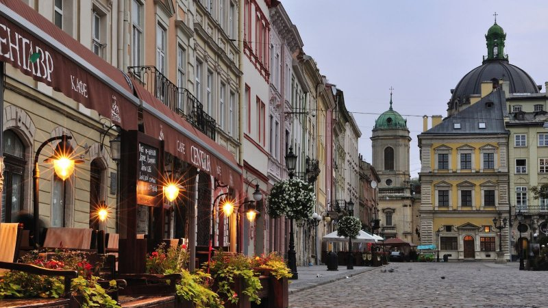

Lviv is the most unusual city in Ukraine, and its most colorful. It is one the country’s of most popular tourist destinations. Only Kyiv can compete with its beauty, grandness and number of amazing landmarks. Different eras, architectures, traditions, identities, temperaments, and histories have been woven into the common thread that is Lviv. On one hand, Lviv’s grandness inspires awe in its guests; on the other, its openness, elegance and inimitable warm atmosphere make this city one of the warmest and most hospitable in Ukraine.

Lviv City Center
News
Business News
Ukraine Fights Labor Drain With Higher Wages
Current Labour Situation
With the introduction of the visa-free regime with the European Union, Ukrainians are pouring into neighboring countries in search of better economic opportunities. Poland, as one of the main points of destination, registers a million and a half Ukrainian workers.
Ukrainian emigrants are welcome in Europe because they help European countries address their own demographic crisis. But it becomes ever more challenging for Ukraine’s government to win back its depleting workforce and encourage people to stay.
In a survey conducted in December by the Kyiv International Institute of Sociology, the percentage of Ukrainians who said they plan to work this year in the EU was 27%. In real terms, this would be 10 million people.
Minimum Wage Hikes do not Bring Joy
Although wage increases sound like a good thing, Ukrainians aren’t rejoicing.
Income isn’t sufficient to meet basic needs, let alone save for retirement. Many face high energy and food prices and struggle to make ends meet. Last year prices of popular goods outran a growth of wages and the 13.7 percent inflation rate, forcing many to cut down on meat. By the end of this year, prices are predicted to rise by almost 9 percent.
Despite the government’s good intentions, natural growth of Ukrainian salaries is stagnant from slow economic growth, while purchasing power is lost due to inflation. The inconvenient truth is that wage increases require a favorable economic environment, which Ukraine doesn’t have. The reforms needed to create this environment have been incomplete and recently slowed down. But even if implemented, they take time to kick in before Ukrainians will feel real improvement in their standard of living.
By Vera Zimmerman
Finance
Ukraine Confirms New Central Bank Boss to Help Unfreeze IMF Loan
Ukraine finally confirmed the appointment of a new central bank chief on Thursday, almost a year after his predecessor quit, in a move that could help unfreeze the eastern European nation’s $17.5 billion bailout.
Parliament approved Yakiv Smoliy, acting governor since the resignation of Valeriya Gontareva, as permanent head of the National Bank of Ukraine. His candidacy was put forward by President Petro Poroshenko, who’s faced criticism for leaving the post vacant for so long.
Culture
Lviv is special
Lviv is an open air museum and the embodiment of the Ukrainian culture and European charm, unforgettable panoramas, and unique monuments of architecture, old traditions and, surely, flavored coffee in the legendary Lviv coffee houses.
Guests are charmed by the special atmosphere of majestic calmness reigning in the city and pleasantly striking hospitality of local habitants.
Lviv is the city of numerous old universities, unique scientific establishments and archives, and famous libraries and museums. You can stroll about quiet streets, each time discovering something new and interesting for yourself.
Lviv’s historic center can be called an outdoor museum. For good reason, it was included on the list of UNESCO’s World Cultural Heritage sites – it has nearly two thousand historic, cultural and architectural monuments. The heart of the city, the Rynok Square, amazes with colorful houses, taken straight from the pages of fairytales. In its center stands the Town Hall, from which one can see breathtaking views of the city. You will get a good look at the Cathedral, in which elements of Gothic, Renaissance, Baroque, and Classicist architecture are successfully blended. You will also see the Dominican Church, the famous Armenian Apostolic Church and Lviv’s crown jewel – the beautiful St. George's Cathedral. Another fantastic panoramic view can be seen from the Lviv High Castle’s sightseeing platform.
To find out more about this city watch two small videos.